This exhibition is on permanent display in the main science museum in Paris. It was conceived by the artist Philippe Comar, whose excellent book La Perspective en Jeu (Découvertes Gallimard, 1992) discusses the same ideas as are presented in the exhibition. There is also a cheap and useful teacher's guide for school visits, CitéDoc 52: Sténopé, available from the museum shop.
The exhibition deals generally with how three-dimensional space is represented by two-dimensional surfaces (a "sténopé" is the pinhole which admits light into a pinhole camera or a camera obscura).
This perspective anamorphosis of a zig-zag design works in the same way as the design at Vauxhall Station... |
... You can see the true zig-zag only when you stand at this specific point on the floor.... |
... Otherwise you see something like this. |
| 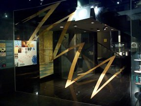 | 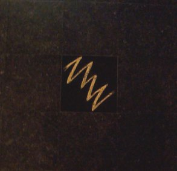 | 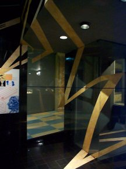 |
This is a model to show how the skull in Holbein's painting The Ambassadors should be viewed. Inside a glass cabinet there is a plastic model skull; on the surface of the glass are three anamorphic skull images, of varying amounts of distortion. By putting your eye at the right "peephole" you will each one of the anamorphic skulls in un-distorted form, overlaid on the plastic skull in the background.
|
Anamorphosis of the skull... |
...and the view from the peephole |
| 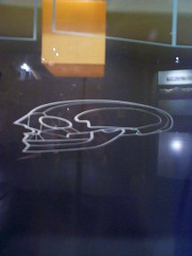 | 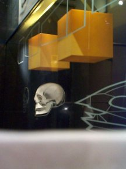 |
|
Second anamorphosis... |
...and view from the second peephole |
| 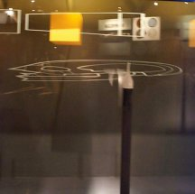 | 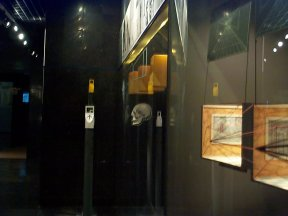 |
Note: these objects are no longer on display in the exhibition.
|
Conical mirror anamorphosis, |
...and viewed from the side |
There is a mechanical device ("pantograph") |
| 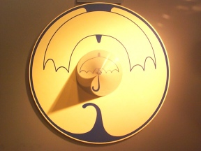 | 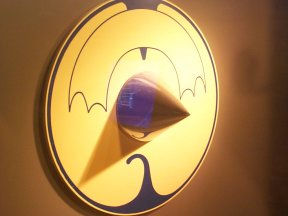 | 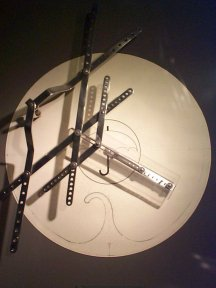 |
|
A selection of small cylindrical |
Advertisement for Renault cars |
Anamorphosis of a square grid |
| 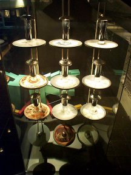 | 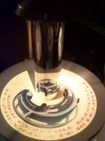 | 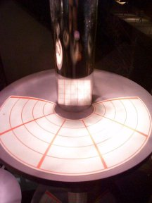 |